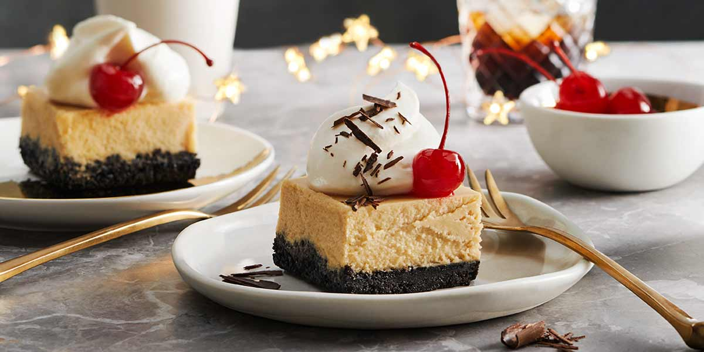

White Russian Cheescake

Weather your a nhilist, a urban achiever, or just a dude, this is delecious cake everyone can enjoy.
Ingrediants
- 1 tablespoon butter
- 1 tablespoon milk
- 3 tablespoons sugar
- 2 tablespoons Kahlua
- 28 vanilla wafers
- 1⁄4 cup pecan pieces
- 3 (8 ounce) packages light cream cheese
- 3⁄4 cup sugar
- 1⁄2 teaspoon salt
- 1 1⁄2 teaspoons vanilla
- 3 eggs
- 1⁄4 cup Kahlua
- 2 tablespoons vodka
- 2⁄3 cup light sour cream
- 2⁄3 cup flaked coconut, toasted (optional)
Directions
- In a skillet over low heat, combine the butter, milk and 3 Tbs sugar and stir until the butter is melted and the sugar is dissolved.
- Add the 2 Tbs Kahlúa and continue to heat, stirring constantly, 2 minutes.
- Pulse the cookies and nuts together in a blender or food processor to make crumbs.
- Add the butter mixture and pulse briefly to blend with the crumbs.
- Press the butter and crumb mixture evenly into a 9-inch springform pan.
- Beat the cream cheese until smooth.
- Beat in the 3/4 cup sugar, the salt and the vanilla.
- Add eggs, one at a time, beating well after each.
- Stir in the 1/4 cup Kahlúa and the vodka.
- Pour into the crust, set the pan on a baking sheet and bake at 350°F 45 minutes.
- Cool 5 minutes.
- Spread the sour cream over the cheesecake, and sprinkle the coconut on top.
- Chill in the refrigerator.